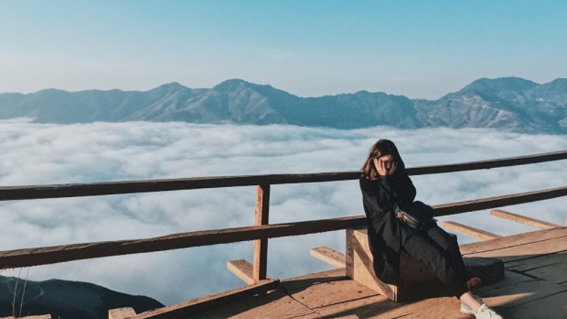
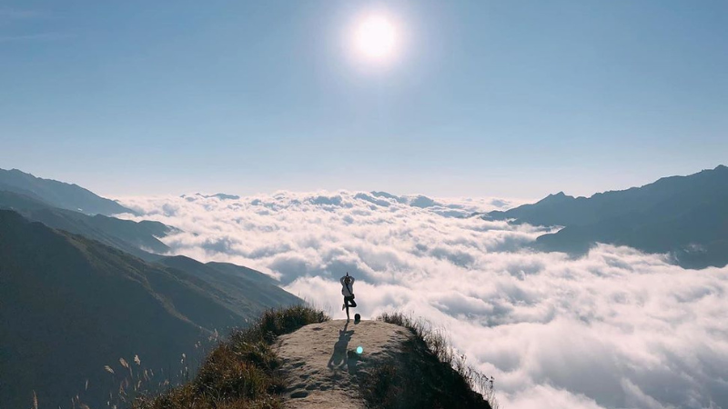

MỘC CHÂU - CẦU KÍNH BẠCH LONG - SĂN MÂY TÀ XÙA ( 2N1Đ - THỨ 7 HÀNG TUẦN )
3.880.000 vnđ
Giới Thiệu
Mộc Châu – Lựa chọn có 1 – 0 – 2 cho những ai muốn tận hưởng những ngày cuối tuần nhẹ nhàng, vui vẻ. Cách Hà Nội khoảng 240km nhưng chỉ cách Mộc Châu ở khoảng 100km đường bộ. Tận dụng được lợi thế địa hình đó đã xây dựng một hành trình hoàn hảo, dành tặng du khách trọn vẻ đẹp của Tây Bắc ở cả Mộc Châu và Tà Xùa vào dịp cuối tuần.
Tà Xùa – Đỉnh núi cao thứ 10 của Việt Nam – 2650m nằm trên dãy núi Tà Xùa với ba đỉnh núi làm ranh giới tự nhiên của Yên Bái và Sơn La.
Lịch Trình
NGÀY 01: HÀ NỘI - MỘC CHÂU - CẦU KÍNH BẠCH LONG (ĂN - / TRƯA / TỐI)
5h45-06h00: Xe và hướng dẫn đón Quý khách tại Nhà hát lớn Hà Nội sau đó di chuyển tới đón khách tại BigC Thăng Long và Cổng số 1 Trung tâm Hội nghị Quốc Gia. Trên đường đi, xe dừng lại một nhà hàng địa phương để Quý khách tự túc ăn sáng và nghỉ ngơi.
09h00: Dừng chân trên đèo Thung Khe lộng gió để chụp ảnh và ngắm cảnh rừng núi hùng vỹ của Hòa Bình.
Đến Mộc Châu, Quý khách ăn trưa tại nhà hàng. Sau bữa trưa, xe tiếp tục đưa Quý khách đi tham quan chụp hình
Tiếp sau, xe ô tô đưa đoàn tới Mường Sang. Tại đây, Quý khách tự do lựa chọn một trong hai điểm thăm quan nổi tiếng đó là: Happy Land hoặc Cầu kính Bạch Long dài nhất thế giới.
16h30: Xe từ Mộc Châu đưa Quý khách đi Bắc Yên (Sơn La). Tới Bắc Yên. Quý khách ăn tối tại nhà hàng sau đó về khách sạn nhận phòng nghỉ ngơi. Buổi tối Quý khách tự do khám phá Bắc Yên về đêm. Nghỉ đêm tại Bắc Yên.
NGÀY 02: BẮC YÊN - TÀ XÙA - SỐNG LƯNG KHỦNG LONG - HÀ NỘI (ĂN SÁNG / TRƯA / - )
04h45: Đoàn trả phòng và lên xe đi Tà Xùa.
06h00: Tới Sống Lưng Khủng Long. Quý khách ăn sáng tại nhà hàng địa phương và chờ những tia nắng bình minh đầu tiên nhô lên từ biển mây trắng xóa trong điều kiện thời tiết thuận lợi. Quý khách tự do ngắm cảnh & chụp hình với biển mây.
07h00: Đoàn tham quan Sống lưng Khủng long tại xã Háng Đồng. Nhìn từ trên cao, sống lưng khủng long trở nên huyền ảo hơn khi làn mây nhẹ trôi lãng đãng cùng những cơn gió mát lạnh sáng tinh sương. Đường trên sống lưng rộng chỉ chừng 1m với độ dốc gắt sỏi đá, chưa kể hai bên đều là vực sâu hun hút. Thế nhưng, cảnh quan thiên nhiên kỳ vĩ khi đứng trên đỉnh Tà Xùa thực sự là món quà cho những ai chinh phục được cung đường này.
Ghé Thào Coffee thưởng thức tách cà phê nóng hổi & dõi mắt nhìn ra núi đồi hùng vĩ xung quanh (chi phí đồ uống tự túc).
Nếu còn thời gian, hướng dẫn viên sẽ hẹn giờ và hướng dẫn Quý khách có thể thuê xe ôm để tự do đi thăm quan và chụp hình với:
Điểm săn mây Tà Xùa - nơi có thể ngắm biển mây với góc nhìn panorama
12h00: Ăn trưa tại nhà hàng. Sau bữa trưa, Xe đưa Đoàn về lại Hà Nội. Trên đường về sẽ dừng chân tại thị trấn Thanh Sơn - Phú Thọ thưởng thức đặc sản thịt chua Thanh Sơn & mua về làm quà cho người thân.
19h00: Về tới Hà Nội. Kết thúc một hành trình hái trải nghiệm tuyệt vời tại Mộc Châu và Tà Xùa. Hướng dẫn viên chào tạm biệt Quý khách và hẹn gặp lại!
Dịch Vụ
GIÁ BAO GỒM:
- Xe Ô tô du lịch đời mới đưa đón suốt hành trình.
- HDV kinh nghiệm, nhiệt tình suốt hành trình.
- Nghỉ đêm tại khách sạn 3*, 2 khách/ phòng, lẻ nam nữ ngủ phòng 3 khách.
- Ăn uống theo chương trình (Bữa chính 150.000đ/ khách/ bữa; Ăn sáng 30.000đ/ khách/ bữa, 1 bữa ăn nhẹ.
- Bảo hiểm du lịch suốt tuyến, mức cao nhất 50.000.000đ/ người/ vụ:
- Chi phí làm thủ tục với biên phòng.
- Vé thăm quan theo lịch trình tour.
KHÔNG BAO GỒM:
- Chi phí cá nhân.
- Tiền tip lái xe, HDV.
- VAT.
- Vé tắm khoáng nóng Ban Mai retreat.